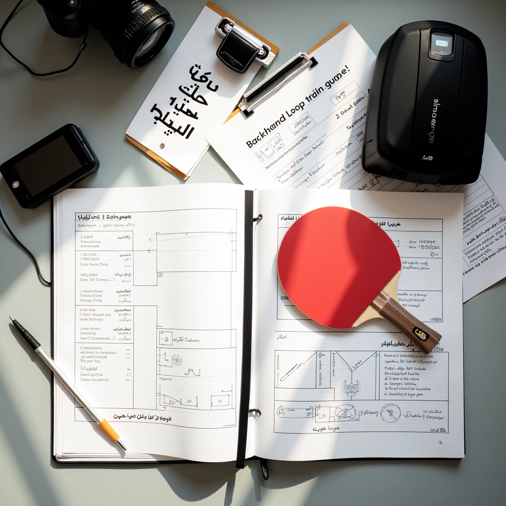
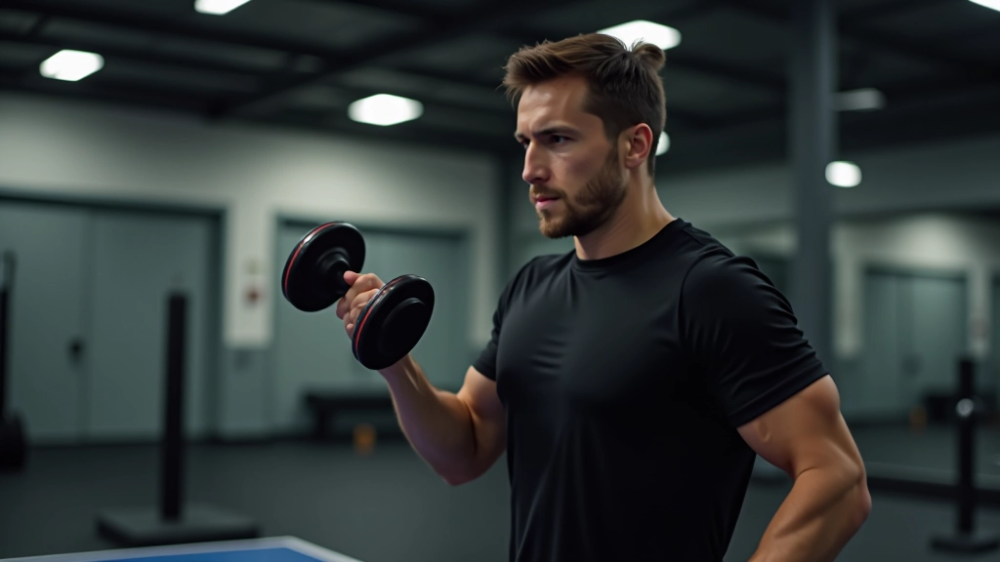
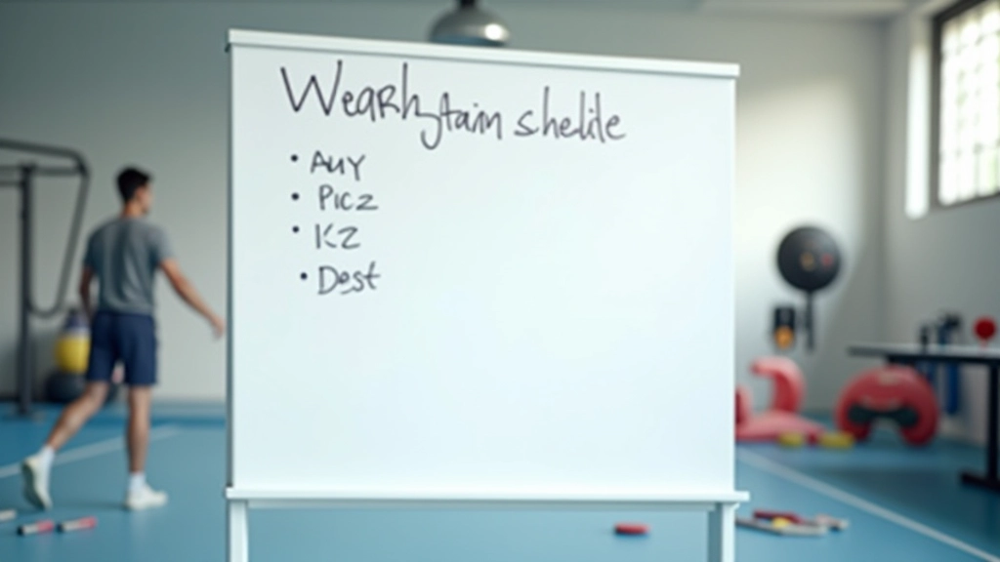
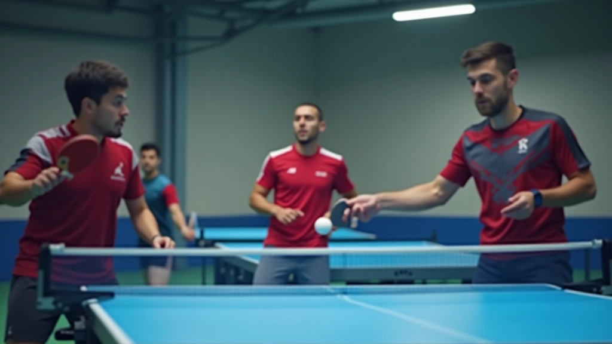

تصحيح الأخطاء الشائعة في موضع الجسد
أغلب المبتدئين يرتكبون أخطاء في وضعية الجسد أثناء اللوب. نشرح الأخطاء الثلاثة الأكثر شيوعاً وكيفية تصحيحها.
تمارين عملية وفعّالة لبناء القوة اللازمة لتنفيذ اللوب بقوة واتساق. نركز على التمارين التي تحاكي الحركة الفعلية للعبة وتطور العضلات الأساسية.


فريق المحتوى التحريري
متخصصون في تقديم إرشادات عملية وسهلة المتابعة لإتقان اللوب الخلفي
القوة ليست كل شيء في تنس الطاولة، لكنها أساسية. عندما تضرب اللوب، أنت تحتاج إلى قوة كافية لرفع الكرة ضد الثقل والمقاومة. الكثير من اللاعبين المبتدئين يحاولون الاعتماد على التقنية وحدها، لكن بدون قوة كافية في الذراع والكتف، سيبقى اللوب ضعيفاً وغير موثوق.
ما نركز عليه هنا ليس بناء عضلات ضخمة. الهدف هو بناء قوة عملية — القدرة على توليد قوة سريعة ومستقرة من خلال الحركة الدقيقة. هذا يختلف عن رفع الأثقال العادية. نحتاج إلى تمارين تحاكي حركة اللوب الفعلية.

هذه التمارين مصممة خصيصاً لتطوير القوة المطلوبة للوب. كل تمرين يستهدف مجموعة عضلية معينة أو نمط حركة. ننصح بأداء هذه التمارين 3 مرات في الأسبوع مع أيام راحة بينها.
هذا التمرين يقوي الكتف بشكل مباشر. تأخذ دمبل خفيف في كل يد (حوالي 2-3 كيلو للبدايات)، تقف بشكل مستقيم، ثم ترفع الذراعين جانباً حتى تصل إلى مستوى الكتف. تنزل ببطء وتكرر 12-15 مرة. الحركة بطيئة ومسيطر عليها هي الأفضل هنا.
استخدم كرسي مائل أو حتى درجات السلم. تستلقي بزاوية بحيث رأسك أعلى من قدميك. تمسك دمبلين أو حتى زجاجات ماء ممتلئة، وتضغط لأعلى بحركة سلسة. هذا يقوي عضلات الصدر والكتف معاً، وهي عضلات مهمة جداً للوب.
قف بشكل مستقيم وأمسك دمبل في كل يد. ارفع الدمبلين أمامك حتى مستوى الكتف، ثم انزلهما ببطء. هذا يقوي الجزء الأمامي من الكتف والذراع. يُنصح به 3 مجموعات من 12 تكرار لكل مجموعة. لا تستخدم وزن ثقيل جداً — السيطرة أهم من الوزن.
الأشرطة المرنة رخيصة وفعّالة جداً. تقف على الشريط وتمسك الطرفين، ثم تسحب لأعلى في حركة دائرية. هذا التمرين يحاكي حركة اللوب بشكل أقرب من التمارين الأخرى. يمكنك تعديل المقاومة بتغيير موضع قدمك على الشريط.
هذا تمرين ديناميكي حقيقي. تمسك حبل (أو رسن سميك) وتحرّكه بحركة موجية سريعة. هذا يطور القوة الانفجارية والتحمل العضلي معاً. جرّب 30 ثانية من الحركة السريعة، ثم 30 ثانية راحة، وكرر 5 مرات.
لا تحتاج إلى ساعات طويلة في الصالة. جلسة 30-40 دقيقة، 3 مرات في الأسبوع كافية تماماً. الاستقرار أهم من الشدة.

بعد 4-6 أسابيع، ستشعر بفرق واضح. لكن التطور لا يتوقف هنا. إليك كيفية زيادة الصعوبة بدون الإصابة.
ركّز على التعود على الحركات والشعور بالعضلات. استخدم أوزان خفيفة وكرر التمارين بنفس الطريقة. الهدف هو تعلم الحركة الصحيحة وليس رفع أوزان ثقيلة.
أضف 10% إلى الوزن الذي تستخدمه. لا تزيد أكثر من هذا دفعة واحدة. إذا كنت تستخدم دمبل 2 كيلو، انتقل إلى 2.2 كيلو. يبدو قليلاً، لكنه كافٍ لتحدي العضلة.
بدلاً من زيادة الوزن فقط، أضف تكرارات إضافية أو مجموعة ثالثة. أيضاً، يمكنك تقليل وقت الراحة بين المجموعات. هذا يزيد من الشدة الكلية للتمرين.
لا تبدأ التمارين مباشرة. قضِ 5-10 دقائق في الإحماء — دوّر الأكتاف، حرّك الذراعين، اركض في المكان قليلاً. هذا يحضّر العضلات والمفاصل للعمل.
من الأفضل أن تؤدي التمرين بشكل صحيح مع وزن خفيف بدلاً من استخدام وزن ثقيل بحركة خاطئة. الحركة الخاطئة تسبب إصابات وتقلل من فعالية التمرين.
لا تتسرع بين المجموعات. خذ وقتك، تنفس بشكل عميق، واسمح للعضلات بالتعافي قليلاً قبل المجموعة التالية. هذا يحسّن الأداء والسلامة.
العضلات تنمو أثناء الراحة وليس أثناء التمرين. تأكد من نومك 7-8 ساعات كل ليلة وتناول طعام صحي يحتوي على بروتين كافٍ (حوالي 1.2 غرام لكل كيلو من وزنك).
رأينا هذه الأخطاء مرات كثيرة. تجنبها من البداية، وستوفّر على نفسك الوقت والإحباط.
الخطأ الأول: البدء بأوزان ثقيلة جداً. يحاول الكثيرون رفع أوزان ثقيلة مباشرة لإثبات قوتهم. النتيجة؟ إصابات وألم وفقدان الحافز. ابدأ بخفيف وزد تدريجياً.
الخطأ الثاني: تجاهل الإحماء. كثيرون يريدون الوصول مباشرة للتمرين الأساسي. الإحماء ليس مضيعة وقت — هو استثمار في السلامة والأداء.
الخطأ الثالث: عدم التركيز على الحركة. كثيرون يحركون الوزن بسرعة عشوائية دون السيطرة. الحركة البطيئة والمسيطر عليها أفضل بكثير من السرعة العشوائية.
الخطأ الرابع: عدم الراحة الكافية. التدريب 6 أيام في الأسبوع ليس أفضل من 3 أيام. العضلات تنمو أثناء الراحة. خذ يوم راحة على الأقل بين جلسات التدريب.
هذه التمارين ليست بديلة عن تدريب اللوب الفعلي على الطاولة. هي مكملة له. الأفضل هو الجمع بينهما. مثلاً، في أيام تدريب اللوب (الاثنين والأربعاء)، مارس تمارين اللوب لمدة 60 دقيقة. في أيام تمارين القوة (السبت والثلاثاء والخميس)، قم بتمارين تقوية الذراع والكتف. هذا يعطي جسدك تنوعاً ويمنع الإرهاق الزائد.
أيضاً، بعد أن تشعر بالراحة مع هذه التمارين، يمكنك إضافة تمارين تحاكي حركة اللوب بشكل أقرب. مثلاً، استخدم حبل مرن ملتصق بالحائط وقم بحركة اللوب مع مقاومة الحبل. هذا يطور القوة والحركة معاً.
القوة في الذراع والكتف ليست شيئاً تطوره في أسبوع أو شهر. هي بناء تدريجي يحتاج صبراً والتزاماً. لكن إذا التزمت ببرنامج منتظم، ستلاحظ تحسناً واضحاً في أداء اللوب بعد 6-8 أسابيع. الضربات ستصبح أقوى، والتحكم أفضل، والثقة أكبر.
ابدأ بالتمارين الخمسة الأساسية. التزم بالخطة لمدة شهر واحد على الأقل. لاحظ التحسن. ثم طور البرنامج تدريجياً. هذا هو المسار الصحيح للنجاح. لا اختصارات، فقط عمل منتظم وذكي.
هذه المقالة توفر معلومات تعليمية عن تمارين تقوية الذراع والكتف للاعبي تنس الطاولة. ليست بديلة عن التدريب الشخصي أو استشارة متخصص. كل شخص لديه احتياجات وقيود جسدية مختلفة. إذا كنت تعاني من أي إصابة أو ألم سابق، استشر طبيباً أو مدرب متخصص قبل البدء بأي برنامج تمارين جديد. تمرّن بحذر، استمع لجسدك، وتوقف فوراً إذا شعرت بألم حاد.
تعمّق أكثر في إتقان اللوب الخلفي
أغلب المبتدئين يرتكبون أخطاء في وضعية الجسد أثناء اللوب. نشرح الأخطاء الثلاثة الأكثر شيوعاً وكيفية تصحيحها.

نوع المضرب يؤثر كثيراً على أداء اللوب. نساعدك على فهم الفروقات بين الخيارات المختلفة واختيار الأفضل.

بعد إتقان الأساسيات، انتقل للمستويات الأعلى. نشرح كيفية تطبيق اللوب في المباريات والاستراتيجيات المتقدمة.